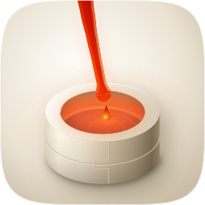
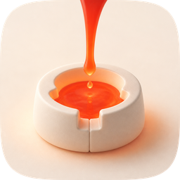
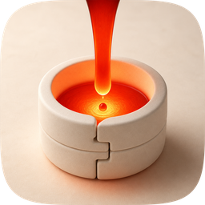

| Take | Renders at 128 / 32 / 16 css px (2× retina sources), plus the 16px squint magnified | Rubric | Verdict |
|---|---|---|---|
| A · icon.svghand-authored layered SVG, built by build_icon.py - SHIPS |
 |
11 / 12 | Passes all four non-negotiables. 1 full-bleed artwork with the superellipse as a clipPath, the pour deliberately cut by the top edge. 2 flask 55.7% of tile width, side margins 227px, bottom 105px. 3 the designed silhouette filled solid black is a stream falling into a squat vessel, still nameable at 32px. 4 at 16px a warm mass over a pale drum with a lit mouth, no smear. 5 one soft top-left key plus the sanctioned emissive interior. 10 four real layers over a swappable ground; identity is the vessel-plus-stream shape, not the hue. Loses 7: melt against tile measures 3.04:1 and the shaded flank 3.98:1, but the flask's lit flank sits at 1.01:1 against the tile beside it, so half the body separates by rim light and contact shadow alone and softens in grayscale. Absorbed from the raster takes: the two-part keyed flask, the mid-air cascade, and the whole melt ramp. |
| B · icon-engineB-arrow-d2f7ef.svgArrow 1.1 vector take, spec as brief |
|
6 / 12 | Hard-fails 1: a rounded-rect corner radius and a drop shadow are baked into the artwork, with a dusty mauve field showing outside them, so it can never be masked with the set's path. Fails 6 too - that mauve is a third hue family and the pot's tan is a fourth. 2 the pot occupies about 36% of the tile and floats on an unearned white plinth. 11 the plinth is a prop that means nothing. What it did earn its cost for: it independently arrived at the same three-stage read (stream, detached droplet, filled vessel), which is corroboration that the composition is legible to something that never saw the other takes. |
| C1 · icon-engineC-4a73ea-masked.pngGPT Image 2 raster, three porcelain-register corpus exemplars as references |
 |
9 / 12 | Fails 10 by construction, as any flat pre-masked raster does - no layers, identity hostage to one baked colour relationship. Also soft on 2: the group sits low with a third of the tile empty above it, and the stream is thin enough that its top third fades toward the porcelain. Strong on material, and it is where the two-part flask with a keyed parting first appeared - a real casting flask is a cope and a drag, and that detail is both accurate and ownable. Kept as the second material reference; not scored as a shipping candidate. |
| C2 · icon-engineC2-6c0a72-masked.pngGPT Image 2 raster, second take - the material target the loop ran against |
 |
10 / 12 | Wins the material read outright and loses on the one check that decides what ships. Fails 10 (flat raster, zero layer separation) and is soft on 2 (the flask is cropped tight at the sides and the stream leaves the frame off-centre). Its melt is the measurement that rebuilt take A: sampled on matched geometry it sits at luminance 0.42 to 0.53 and hue 5 to 9 degrees, where A's first two drafts sat at 0.57 to 0.80 and hue 20 to 25 - a full 17 degrees too yellow. Its stream also reads darkest along the axis and lighter at both flanks, which is the inverse of the bright-core construction A had, and correcting that was the single largest material gain of the run. |
#bg / #mid / #fg / #highlight, ready for Icon Composer), the only one designed for the set's exact superellipse rather than around a baked corner, and it now carries the raster's material rather than approximating it - the melt ramp, the dark-axis stream cross-section, the two-part keyed flask and the contrast budget were all measured off take C2 and rebuilt as gradients and layers. Known liabilities to revisit: (1) the flask's lit flank sits at 1.01:1 against the tile beside it, so the left half of the body is carried by rim light and contact shadow and softens under a grayscale or heavy tint - the porcelain register's standing trade, shared with the sibling create-mac-icon icon, and the first thing to fix if a Tinted variant looks weak. (2) the melt clears the 3:1 figure-ground bar at 3.04:1, a bare margin that a further darkening would widen but at the cost of drifting the accent away from the set's vermilion. (3) the two-part parting key and the detached droplet both disappear below about 48px; the icon reads correctly at 16px but the two devices that make it this icon are large-size only. (4) the mass sits low (bottom margin 105px against 227px at the sides) because the vessel stands on a ground plane while the pour occupies the upper half - deliberate, but it makes the tile's top-left quadrant the emptiest region in the set.| Round | Edit class | 1024 | 256 | 128 | 32 | 16 | Mean | Gate |
|---|---|---|---|---|---|---|---|---|
| r00 | baseline, after the measured melt correction | 0.4268 | 0.3962 | 0.4052 | 0.7113 | 0.7774 | 0.5434 | - |
| r01 | material: contrast budget, deepen the dark end | 0.4525 | 0.4168 | 0.4311 | 0.7233 | 0.7856 | 0.5619 | ACCEPT +0.0924 |
| r02 | material: the melt's dark end | 0.4516 | 0.4148 | 0.4274 | 0.7224 | 0.7856 | 0.5604 | ACCEPT −0.0075 |
| r03 | composition: open the mid-air cascade | 0.4527 | 0.4125 | 0.4263 | 0.7232 | 0.7861 | 0.5602 | ACCEPT −0.0010 |
| r04 | material: reach the 3:1 figure-ground floor | 0.4525 | 0.4158 | 0.4292 | 0.7224 | 0.7855 | 0.5611 | ACCEPT +0.0046 |
| r05 | material: clear 3:1 cleanly - ships | 0.4528 | 0.4158 | 0.4281 | 0.7184 | 0.7849 | 0.5600 | ACCEPT −0.0054 |
The 1024 composite is the material gap and it moved 0.4268 to 0.4528. Everything after r01 is inside the noise band: r02 to r05 are four consecutive neutral rounds, which is the loop's stop condition. The residual floor is composition, not material - take C2's flask is larger, lower and lit across the tile differently, and the metric cannot separate that from a material difference. Two of those rounds were kept despite a flat or slightly negative composite because the composite is a proxy for a human judgment and was blind to what they fixed: r03 made the signature mid-air cascade legible (three stages at three heights instead of one 50px bunch), and r05 cleared a rubric floor the metric does not encode. Round sources are kept at fidelity-runs/rNN.icon.svg with their score JSON, residual and edge maps.
icon-directions.md (mask discipline, grid, silhouette, 16px identity, single light model, palette economy, figure-ground, depth coherence, era coherence, variant robustness, personality, no-text) - checks 1 to 4 non-negotiable, delivery bar 10/12 or better. Raster takes are audited on their squircle-masked 1024 versions, masked with the set's exact path and never a rounded-rect approximation. Render commands: rsvg-convert -w {1024,256,64,32} for SVGs, PIL LANCZOS for rasters, both via render_audit.py.